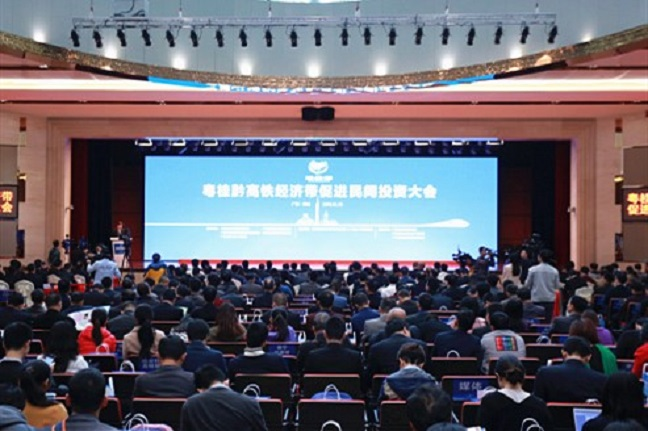
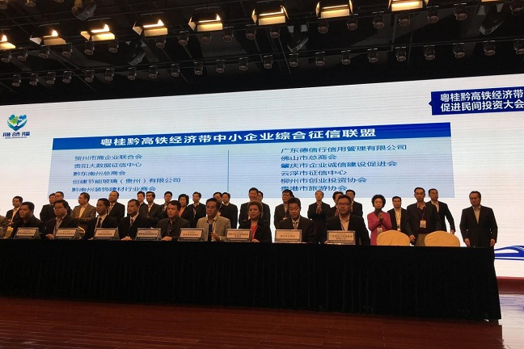

粤桂黔高铁经济带促进民间投资大会在佛山南海
12月23日，由粤桂黔高铁经济合作试验区（广东园）管理委员会主办的粤桂黔高铁经济带促进民间投资大会在佛山南海举行，大会由佛山市委常委、南海区委书记黄志豪主持。国务院参事室特约研究员、中国农产品市场协会会长张玉香，中国扶贫志愿服务促进会副会长王家华，省政府副秘书长刘洪，佛山市委常委、副市长蔡家华，省工商联副巡视员卫国强出席大会，粤桂黔三省（区）发改委有关领导，十三市（州）政府、企业、行业协会代表等参加活动。

黄志豪在大会上致欢迎辞。他表示，13个兄弟城市已经成为密不可分的共同体，如同高速前进的动车组，正快速、稳健迈向更美好的明天。此次大会，是贯彻落实国家促进民间投资决策部署，促进三地民间投资增长的一大重要举措，标志着粤桂黔高铁经济带发展跃上新台阶。
蔡家华代表佛山市委、市政府对大会的召开表示祝贺。他指出，佛山市民营经济发达，民间资本雄厚，市委、市政府一直高度重视促进民间投资健康发展。此次大会的召开是粤桂黔三省（区）及高铁沿线城市扩大民间投资、促进经济发展的重大机遇。佛山将顺应开放发展大势，秉持合作共赢的理念，与高铁沿线城市（州）携手，全力推动粤桂黔高铁经济带上升为全国高铁经济带合作示范区，搭建民间合作大平台，激发民间投资潜力和创新活力。
刘洪在会上作了讲话。他表示，大会以促进民间投资为主题，通过“政府搭台、企业唱戏”，创新合作模式，激发市场活力，促进民间投资，是协同推进粤桂黔高铁经济带发展的创新实践，将开启粤桂黔高铁经济带发展新篇章。
会上，粤桂黔高铁经济带农业产业合作联盟、中小企业综合征信中心合作联盟、旅游产业联盟、民间资本联盟4个综合性联盟以及粤桂黔铝型材供应链联盟、家具采购联盟、陶瓷技术联盟3个产业联盟宣布成立；粤桂黔农业产业信息发布中心、中小企业综合征信中心建设启动；《粤桂黔高铁旅游手册》发布，粤桂黔高铁旅游资讯App等正式上线；粤桂黔创新创业服务平台“创融汇”、网上路演中心、“互联网+信用三农”众筹服务平台进行集中展示。其中，粤桂黔中小企业综合征信联盟将成为全国跨区域征信系统建设先行者。大会还举行合作项目签约仪式。

会后，与会领导、嘉宾考察了第二届粤桂黔名优农产品食品展示博览会。